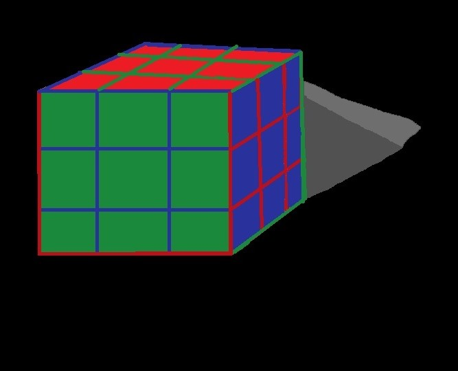

JOJO INFO AND QUIZ
What is jojo?
Jojo, or Jojos Bizarre Adventure is an anime and manga, that is first centered around vampires, but then changes to something MUCH different. When it changes from being about vampires, it starts to revolve around these things called "stands", which are the physical manifestations of someones fighting spirit. Only stands can attack other stands (like, you can't punch a stand without having your own attack it, YOU can't physically touch it, unless the stand allows you to), only other stand users can see stands, and stands are used mostly for fighting, although there are a couple that don't fight, and are just kinda there.

This is the main character for part 3, co- main character for 4, he has 2-3 appearences in part 5 and he is also a heavily story based character in part 6. His name is Jotaro Kujo and he has a stand that has some of the best statistics in the whole series (not including stands that have been modified). The stands name is Star Platinum

These are the stand stats, for star platinum to be more specific and aside from his range he has some of the best stats. but the stats aren't everything, your stand could have an A in attack, but not be strong whatsoever. it depends on the size of the stand, and the fighting spirit of the user.
Links to other sites about this topic.